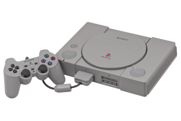
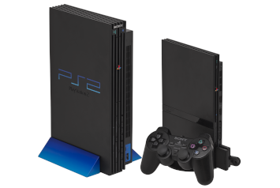
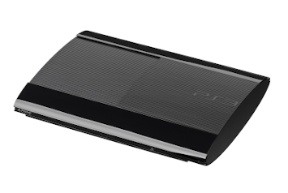
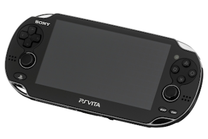
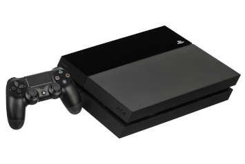
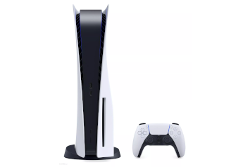

PlayStation (1995)

32-bitowa konsola do gier wideo, wyprodukowana w Japonii przez firmę Sony Computer Entertainment, zaprojektowana przez Kena Kutaragiego. Premiera konsoli odbyła się 3 grudnia 1994 roku, kiedy to pierwsze egzemplarze trafiły na półki japońskich sklepów. Niecały rok później, 9 września 1995 roku, konsola ukazała się w Stanach Zjednoczonych, a 29 września tego samego roku w Europie.
PlayStation 2 (2000)

Konsola gier wideo produkcji Sony Computer Entertainment, następca PlayStation. Konsola miała swoją premierę 4 marca 2000 w Japonii, a w Stanach Zjednoczonych 26 października 2000. Konsola pozwala na uruchamianie gier przeznaczonych specjalnie na tę platformę zapisanych na płytach CD-ROM i DVD-ROM. Urządzenie jest kompatybilne wstecz, tzn. umożliwia również korzystanie z większości starszych gier przeznaczonych dla konsoli PlayStation. Konsola pozwala również na odtwarzanie filmów na dyskach DVD-Video oraz muzyki na dyskach CD-Audio. Urządzenie sprzedawane jest w wersji standardowej i slim (zmniejszonej wersji, znanej również jako PSTwo) w kolorze czarnym oraz dwóch specjalnych wersjach kolorystycznych: Satin Silver (srebrnej) oraz Pink (różowej). Konsola pozwala również na grę wieloosobową przez Internet – wymaga to dodatkowego urządzenia o nazwie Network Adapter (w wersji slim jest on już wbudowany).
PlayStation 3 (2007)

Konsola gier wideo wyprodukowana przez Sony Computer Entertainment. 11 listopada 2006 roku miała miejsce premiera w Japonii, a 17 listopada w Ameryce Północnej. W Europie konsola pojawiła się 23 marca 2007 roku. Jest bezpośrednią konkurencją dla konsol siódmej generacji: Xboxa 360 przedsiębiorstwa Microsoft oraz Wii wyprodukowanej przez Nintendo. Konsola została oficjalnie zapowiedziana przez Sony na targach Electronic Entertainment Expo w maju 2005 roku. PlayStation 3 stała się pierwszą konsolą na rynku, która wykorzystywała format Blu-ray jako podstawowy nośnik danych. Innymi ważnymi cechami konsoli jest darmowy dostęp do usług sieciowych takich jak PlayStation Network (umożliwiająca dostęp do PlayStation Store oraz PlayStation Plus) oraz możliwość połączenia jej z przenośnymi konsolami PlayStation Portable oraz PlayStation Vita.
PlayStation Vita (2012)

Przenośna konsola gier wideo firmy Sony, która została oficjalnie zaprezentowana 27 stycznia 2011 roku. Jest to następca konsoli PlayStation Portable. Urządzenie zadebiutowało w Japonii 17 grudnia 2011 roku, a na rynku europejskim i amerykańskim pojawiła się 22 lutego 2012 roku. Jest konkurentem przenośnej konsoli Nintendo 3DS, która miała swą premierę w pierwszym kwartale 2011 roku. Przez cały okres istnienia sprzęt miał problem w przebiciu się do masowego klienta. Z powodu niskiej sprzedaży jej produkcja zakończyła się 1 marca 2019.
PlayStation 4 (2013)

Domowa konsola gier wideo opracowana przez Sony Computer Entertainment. Ogłoszona jako następca PlayStation 3 w lutym 2013 roku, została wprowadzona na rynek 15 listopada 2013 roku w Ameryce Północnej, 29 listopada 2013 roku w Europie, Ameryce Południowej i Australii oraz 22 lutego 2014 roku w Japonii. Konsola ósmej generacji, konkuruje z Xbox One firmy Microsoft oraz Wii U i Switch firmy Nintendo. Odchodząc od bardziej złożonej mikroarchitektury Cell poprzednika, konsola wyposażona jest w jednostkę APU (Accelerated Processing Unit) firmy AMD zbudowaną na architekturze x86-64, która teoretycznie może osiągać wydajność 1,84 teraflopów; firma AMD stwierdziła, że jest to "najpotężniejsza" jednostka APU, jaką do tej pory opracowała. W PlayStation 4 położono większy nacisk na interakcję społeczną oraz integrację z innymi urządzeniami i usługami, w tym możliwość grania w gry poza konsolą na PlayStation Vita i innych obsługiwanych urządzeniach ("Remote Play"), możliwość strumieniowego przesyłania rozgrywki online lub do znajomych, z możliwością zdalnego sterowania przez nich rozgrywką ("Share Play"). Kontroler konsoli został również przeprojektowany i ulepszony w stosunku do PlayStation 3, między innymi dzięki ulepszonym przyciskom i drążkom analogowym oraz zintegrowanemu touchpadowi. Konsola obsługuje także wideo HDR10 oraz odtwarzanie multimediów w rozdzielczości 4K.
PlayStation 5 (2020)

Konsola gier wideo dziewiątej generacji stworzona przez Sony Interactive Entertainment, zapowiedziana w 2019 roku jako następca PlayStation 4. Premiera sprzętu w Ameryce Północnej, Japonii, Australii, Nowej Zelandii, Singapurze i Korei Południowej odbyła się 12 listopada 2020, a w pozostałych regionach (z wyjątkiem Chin i Indii) tydzień później. Wydana została w dwóch wariantach. Podstawowy zawiera napęd dysków Blu-ray i obsługuje gry pochodzące zarówno z dystrybucji pudełkowej, jak i z dystrybucji cyfrowej za pośrednictwem sklepu PlayStation Store. Drugi wariant, PlayStation 5 Digital Edition, odznacza się niższą ceną ze względu na brak napędu optycznego i umożliwia uruchamianie jedynie gier cyfrowych. Konsola wyposażona jest w dysk SSD pozwalający na szybkie przesyłanie danych i znaczące poprawienie wydajności wyświetlania grafiki, w procesor graficzny AMD obsługujący technologię śledzenia promieni i rozdzielczość 4K oraz pozwalający uruchamiać gry w prędkości do 120 klatek na sekundę, jak również w obsługę dźwięku 3D. PlayStation 5 jest wstecznie kompatybilna z większością gier PlayStation 4 i PlayStation VR. Ogłoszono także 28 tytułów startowych przeznaczonych dla konsoli.